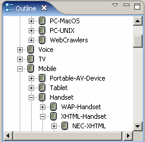

The Outline view is a workbench feature that can display elements of structured files. The display in the view and the Outline toolbar depends on the corresponding editor.
When you are working with the Layout editor you can use the Outline view to navigate to objects in the layout, and select them.
When you select a layout format in any of the Outline view, the Design page, or the Format Attributes view, MCS synchronizes the other two.
The root of the tree in an outline is the device you have selected. You add an object to the layout by right-clicking on an empty format in the view and choosing an item from the context menu.
In the Outline view context menu, each format type is associated with an icon that helps you identify it.
| Format | Icon |
|---|---|
| Empty format | |
| Grid |
|
| Pane | |
| Column Itereator |
|
| Row Iterator | |
| Spatial Iterator | |
| Temporal Iterator |
|
| Fragment |
|
| Dissecting Pane |
|
| Form | |
| Form Fragment |
|
| Region |
|
| Replica |
|
| Segment |
When you are working with the Device Repository editor you can use the Outline view to navigate to devices, and select them.
Device repository outline view

Related topics
Layout editor
Format Attributes view
MCS views